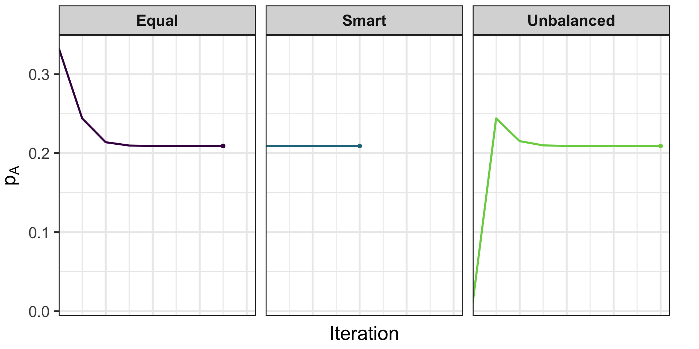
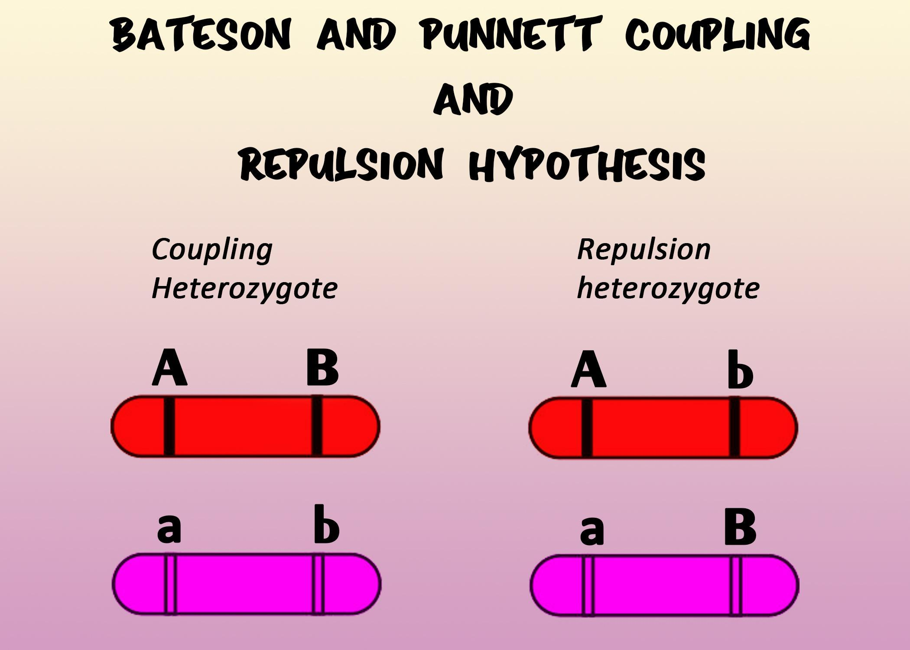

Iterate until parameter changes are below a tolerance.
EM for Gene Frequencies
Genotype
Phenotype
Observed Counts
Genotype Frequency
\(AA\)
\(A\)
\(725\)
\(p_A^2\)
\(AO\)
\(A\)
\(2 p_A p_O\)
\(AB\)
\(AB\)
\(72\)
\(2 p_A p_B\)
\(BB\)
\(B\)
\(258\)
\(p_B^2\)
\(BO\)
\(B\)
\(2 p_B p_O\)
\(OO\)
\(O\)
\(1073\)
\(p_O^2\)
EM: Starting Values Matter
Different initial \((p_A, p_B, p_O)\) can change speed (not the final MLE)
Strategies:
Equal: \((1/3, 1/3, 1/3)\)
Unbalanced guess: \((0.01, 0.98, 0.01)\)
Smart (use \(p_O^{(0)} = \sqrt{n_O/N}\), solve for \((p_A^{(0)}, p_B^{(0)})\) from \(2p_A p_B\))
Tolerance of \(1 \times 10^{-6}\)
EM: Starting Values Matter
Strategy
Iterations
\(\hat{p}_A\)
\(\hat{p}_B\)
\(\hat{p}_O\)
Equal
7
0.209131
0.080801
0.710068
Smart
4
0.209131
0.080801
0.710068
Unbalanced
8
0.209131
0.080801
0.710068
EM Parameter Trajectories

When does EM fail?
Non-identifiability / flat likelihood: Ridges in segregation or linkage models; EM wanders or stalls.
Local maxima & starts: Multiple modes (e.g., mixture of penetrance classes); poor initialization traps EM.
Boundary degeneracy: Rare allele/component weight driven to 0; variance or frequency estimates collapse.
Model misspecification: Violated assumptions (e.g., Hardy-Weinberg, stratification) give misleading “convergence.”
Linkage vs Association Testing
Linkage: Tracks co-segregation of markers and traits within families to map disease genes.
Null hypothesis: no linkage (independent assortment), \(\theta = 0.5\).
Association: Tests for correlation between variants and traits in populations to pinpoint causal loci.
Null hypothesis: no association (e.g., \(\beta=0\) or OR=1).
Two-Point Linkage: Terms
Independent assortment (recall): when loci are unlinked, transmissions are independent and the chance a crossover separates them is \(\theta=0.5\) (Mendel’s Second Law).
Informative transmission/meiosis: a parent \(\to\) child transmission where the transmitting parent is heterozygous at the loci of interest and the genotypes allow us to tell whether a crossover occurred.
Example: parent \(Aa/Bb\) transmits \(AB\) or \(ab\) (nonrecombinant) vs \(Ab\) or \(aB\) (recombinant).
Two-Point Linkage: Terms
Recombinant fraction \(\theta\): the probability that a crossover occurs between two loci in a single meiosis; \(0 \le \theta \le 0.5\).
Nonrecombinant transmission: the child receives an allele combination that matches one of the transmitting parent’s original allele pairs (no crossover between the loci).
Recombinant transmission: the child receives a new combination relative to the transmitting parent’s original pair (a crossover occurred between the loci).
Two-Point Linkage: Repulsion vs Coupling

Two-Point Linkage: Direct Counting
Count \(R\) recombinants and \(NR\) nonrecombinants; total informative \(I=R+NR\).
Point estimate: \(\hat{\theta}=R/I\).
LOD from counts (vs. independence at \(\theta=0.5\)):
R <-12N <-40thetahat <- R / Nlod <-log10((thetahat^R * (1- thetahat)^(N - R)) / (0.5^N))lod
[1] 1.4294
10^lod
[1] 26.87819
Maximize \(\mathrm{LOD}(\theta)\) over \(\theta \in [0,0.5]\) to estimate the recombination fraction; \(LOD \ge 3\) and \(\leq -2\) are classic heuristics (context-dependent).
Worked Example: Direct Counting LOD
Under \(H_0:\theta=0.5\) (a boundary point), \(D = 2\ln(10)\cdot \mathrm{LOD}(\hat\theta)\) has the mixture limit \(\tfrac{1}{2}\chi^2_0 + \tfrac{1}{2}\chi^2_1\); thus \(p = \tfrac{1}{2}\, \Pr(\chi^2_1 \ge D)\).
D <-2*log(10) * lodpval <-0.5*pchisq(D, df =1, lower.tail =FALSE)pval
[1] 0.005148931
Two-Point Linkage: EM with Unknown Phase
Transmitting parent: double het\(Aa/Bb\) with unknown phase.
Mate: Aa/bb (heterozygous at \(A\), homozygous at \(B\)).
Observed per child: two-locus genotypes\((A\text{-genotype}, B\text{-genotype})\).
Two-Point Linkage: EM with Unknown Phase
Missing-data view: the parental phase (coupling vs repulsion) is not observed. We make it a complete-data problem by introducing a weight \(w\in[0,1]\) that blends the two phase-specific models.
Model (given recombination fraction \(\theta\)):
Coupling: \(P(\text{NR})=1-\theta\), \(P(\text{R})=\theta\) (split equally across the two categories).
Same objective: estimate recombination while marginalizing over latent transmissions/phase under current \(\theta\).
E-step engine: compute required state weights via Elston–Stewart peeling (pedigrees) or Lander–Green forward–backward (marker HMM) when you have multiple markers and missing genotypes.
Quantities needed: \(\mathbb E[\#\,\text{recombinants between adjacent markers}]\) and \(\mathbb E[\#\,\text{informative transmissions}]\) under current map.
Use in practice: either (a) plug these expectations into an EM-style update, or (b) more commonly, scan positions to build a LOD curve and report peak and 1-LOD interval.
Multipoint Linkage (HMM)
Markers along a chromosome define an HMM over inheritance states; adjacent recombination rates drive transitions.
Combine penetrance with the marker HMM to compute \(L(\theta)\) efficiently as you slide along the map (forward–backward yields the needed state probabilities even with missing phase/genotypes).
Pros: more information than two-point; better localization. Cons: requires a genetic map and error modeling.
Goal: test the null of no effect (e.g., \(\beta=0\) or OR\(=1\)) to identify regions harboring causal variants.
We test markers, not necessarily the causal variant. If a marker has nonzero LD (correlation \(r\)) with a causal variant, its association test can detect signal from that causal.
Stronger \(|r|\) implies a stronger expected signal at the marker; if \(r\approx 0\), the marker carries no information about that causal.
Sign matters: \(r<0\) flips the observed effect direction at the marker relative to the causal.
In practice, nearby markers within LD blocks show clustered p-values and similar effect signs.
Single-Marker Association: Core Test (Linear)
Linear trait: \(Y=\alpha+\beta G+\gamma^T C+\varepsilon\); test \(H_0{:}\,\beta=0\).
Genotype encodings: additive (0/1/2) or genotypic (AA/Aa/aa); include dominance to test non-additivity.
Binary outcomes (case–control) and logistic models will be covered later.
Hardy–Weinberg equilibrium in controls (e.g., P > 1e−6), mindful of true deviations.
Minor allele frequency threshold (e.g., MAF ≥ 0.01 unless rare-variant methods used).
Differential missingness across case/control; strand/allele checks.
Basic QC Pipeline (Sample-level)
Sample call rate; sex checks from X chr; heterozygosity outliers.
Relatedness/duplicates via IBD; ancestry via PCA; remove outliers or adjust with PCs.
Duplicates/cryptic relatedness: retain one per pair or use mixed models.
Summary & Key Takeaways
Likelihood optimization: Newton–Raphson (score/Hessian), Gradient Descent/SGD (scalable), and EM (latent-data) are core tools.
EM for ABO gene frequencies: initialization affects speed; log-likelihood increases monotonically until convergence.
Linkage: two-point LOD and unknown phase via EM; multipoint mapping framed as an HMM for efficient inference with missing data.
LD basics: r and r^2 quantify correlation between markers and explain why nearby markers can show similar association signals when a causal variant is unobserved
Hands-On: Lab 03 (Applied)
Implement ABO EM and compare starts; plot log-likelihood gap.
Two-point linkage: LOD grid search + EM with unknown phase.
Two-SNP haplotype EM; compute LD (D, r^2).
Mini association demo: linear regression + HWE QC in controls.
See labs/unsolved/lab-03.R for the scaffold (with TODOs) and labs/solved/lab-03.R for a worked solution.